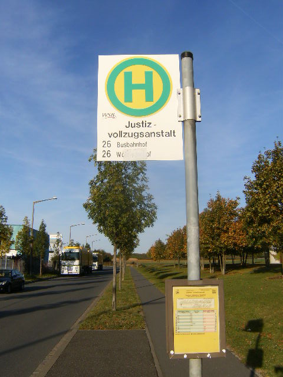

Das krasse Tor hat gesprochen:
Archiv für Februar 2012
Vor ungefähr zwei Wochen zeigte sich erneut, dass die Realität ewig radikaler als der BiKri ist. Während wir mühsam versuchten, unsere Eindrücke und Gedanken über die JVA zu ordnen und auszuformulieren, sind einige Häftlinge in den Hungerstreik getreten. Spärlichen Informationen zufolge – die wir leider hautsächlich aus der Main Pest beziehen konnten – handelt es sich um die Russlanddeutsche, die innerhalb der Anstalt mehr oder weniger unter sich im sogenannten „Russenhaus“ ihre Strafen absitzen.

Dank des grauenhaft niveaulosen Journalismus der Main Pest wissen wir nur von wenigen – und eher belanglosen – Forderungen der Häftlinge. Haben die Anstaltsleitung und das bayrische Justizministerium nur noch die diese Forderungen bekanntgegeben oder hat die extrem selektive Wahrnehmung der Main Pest-Schreiberlinge die Forderung nach besseren Lebensbedingungen in der JVA Würzburg auf Wolldecken, Kopfkissen, „russisches Essen“, Fliegengitter vor den Fenstern und Fernsehgeräte reduziert, wissen wir nicht. Ebenso wenig wissen wir, wie momentan die Lage im „Russenhaus“ ist, wie viele noch mitmachen und ob der Streik denn überhaupt noch läuft.
Es gibt allerdings ein stilles Örtchen im Internet, wo ein Teil des doitschen Volkes, das vom Weltgeist dazu verdonnert wurde, die unterfränkische Pampa zu bewohnen, sich über aktuelle Geschehnisse austauscht (Der letzte Hype berichtete: 1, 2). Beziehungsweise auslässt. Oder viel mehr auskotzt und ausscheißt. In den Kommentarspalten der Main Pest-Internetpräsenz hat sich die Stimme des Volkes vor allem an das missverstandene Thema „Essen“ angehängt. Um so heftiger wurde gegen die Gefangenen gehetzt, um so größer waren allgemeines Unverständnis und Hass auf Insassen, handelte es sich ja um eine ethnische Minderheit, die sehr wenige kennen, von der aber alle scheinbar übelst viel Ahnung haben. Dreist war es nicht erst, als Häftlinge überhaupt irgendwas zu fordern, sondern überhaupt hierher zu kommen. Und was die „anständigen“ Doitschen sich niemals erlaubt haben, nämlich für ihre eigenen Interessen (notwendigerweise) gegen den geliebten Standort Doitschland aufzustehen, das gönnen sie den „Fremden“ und „Kriminellen“ schon gar nicht. Daher müssen z.B. Bereitschaftspolizisten und Bundeswehrsoldaten als das gute Gegenbeispiel herhalten: sie müssen auch Schlimmes ertragen, mucksen aber nicht auf, sondern – fügen sich und dienen dem doitschen „Gemeinwesen“.
Im Folgenden – eine kleine Auswahl aus Ahnungslosigkeit, Ignoranz, Ressentiment und Grausamkeit. Ein paar Schmänkerle, also.
„Knast wird ja immer attraktiver … sollte Pay-TV, Internet und Nuttenbesuch erlaubt sein, Zimmer mit Du/WC, Küchenecke etc.,so könnte ich mir überlegen meinen Lebensabend in einer JVA zu bestreiten. monatliches Taschengeld als Entschädigung für den Freiheitsentzug von 1000 Euro sollte aber auch drin sein. Zumindest ist man im Knast sozial besser abgesichert als im freien Leben, vor Einbrechern geschützt, keine Angst vor den steigenden Energie und Heizölpreisen…zig mal besser als ein auf dem sterbenden Ast Insasse eines Altenwohnheimes“
„selbstmord in der JVA? selber schuld,wer geistig dafür nicht gereift ist, eine zeit lang im knast auszuhalten, der solle halt auf kriminelle spielchen verzichten. jeder mensch hat eine wahl“
„Knast sollte doch eigentlich Bestrafung sein meint man, wenn man aber solche Aktionen von den russ. Häftlingen sieht kann man nur den Kopf schütteln. Armes Deutschland wenn man auf die Forderungen eingeht. Der ehrliche wäre dann wieder der Dumme indem er es mit seinen Steuern finanzieren muss.“
„russisches Essen? Dann hätten die Jungs und Mädels sich halt in Russland verhaften lassen müssen… Da würde es halt nur keinen Interessieren, wenn Inhaftierte irgendwas wollen. Also wohl doch besser hier…unfassbar!“
„ob es solche aufstände in anderen ländern gäbe? es sind leute, die sich in deutschland ansiedelten, also müsste diese auch mit der deuutschen küche zurecht kommen. irgend wann kommen dann asiaten streiken für reis, südamerikaner, die lamm haben wollen, franzosen, die froschschenkel haben wollen…denn wenns russische küche gibt, dann haben die anderen auch das recht, ihre eigene küche zu erstreiken. sich weiss zear dass die russische küche mehrere spezialitäten wie u.a. borstsch . und pelmeni bietet, es ist auch möglich, diese ab und an mal eimnzubauen, aber permanent, das ist zuviel.haben denn die häftlinge in anderen ländern die selben rechte dies zu erstreiken?“
„Ebenso wenig konnten Sie erklären, warum es gerechtfertigt sein soll Strafgefangenen eine besser Unterkunft zur Verfügung zu stellen als Soldatinnen und Soldaten, bzw. inwiefern Kopfkeile und Wolldecken von Soldaten nicht von Strafgefangen aber schon als menschenunwürdig erachtet werden können.“
„…russisches Essen gibt’s in Russland. Ebenso russische Betten, TV-Programm, Betten und Nu …
Wer hält diese Bande auf ??“
„Wer gern russisches Essen möchte sollte sich am besten für ein russische Verwahranstalt bewerben. Dann ist hier Ruhe.“
„Essensvorschlag: Wasser und Brot! Keine Zigaretten! Hoffentlich knickt die Gefängnisleitung nicht ein! Wenn es denen nicht schmeckt, hätten sie halt auf ihre kriminellen Spielchen verzichten müssen. Ich schlage vor: Wasser und Brot sowie Reis und Bohnen! Und das jeden Tag. Reis und Bohnen sind Grundnahrungsmittel, da werden die nicht krank und nehmen auch noch ab, Bluthochdruck ade. Siehe Dschungelcamp! Äh – die Zigaretten würde ich aber verbieten! Früher gab es nur Wasser und Brot und dazu noch eine feuchte finstere steinige moderige und muffige Gefängnis – ohne Decke. Heutzutage leben doch die Gefangenen wie im Paradies. Ein Gefängnis ist kein Hotel – sondern eine Strafe – und so soll es auch sein!“
„Wir reden hier von Kackis die sitzen nicht zu unrecht darin. Wenn sie uns den Gefallen machen wollen per Hungerstreick aus dem Leben zu scheiden: So What???“
„Und wenn jemand meint, er hätte gern russisches Essen, kann man dem sicher entsprechen, indem man ihn/ sie nach Russland in den Bau schickt. Vielleicht spart die Bundesrepublik Deutschland bei dieser Art Outsourcing sogar noch Geld?!“
„Einige dieser Streikenden vergessen wohl gerade, dass sie im Strafvollzug und NICHT im Wellnesshotel sind. So manchem Geringverdiener geht es sicher schlechter, als diesen Streikenden.“
„vielleicht könnte Deutschland auch mit Griechenland einen Häftlingsunterbringungsvertrag schließen statt die ganzen Milliarden runterzuschieben??? Ich glaub, auch die griechischen Gefängnisse haben es in sich, und wenn dann erst die Wärter streiken…“
„Überführt sie zurück ins Putinreich in einen Knast, dort gibt es dann wunschgemäß russisches Essen. Wenn russisches Essen auf Steuerkosten, dann bitte auch eine freie Mahlzeit täglich für Hartz 4-Empfänger, die hätten es wenigstens verdient.“
„Sie leben hier in Deutschland hauptsächlich von unseren Steuergeldern und sollten sich dementsprechend verhalten. Wenn sie sich nicht an die Spielregeln halten, gehören sie bestraft.“
„Knast muss abschrecken, sonst gar nichts….. Davon sind wir leider meilenweit entfernt…“
„Mit wir meine ich unser Gemeinwesen – die Polizei die die Ganoven schnappt und die Gerichte die sie im Namen des Volkes verurteilen… Die Versteher und Gutmeinenden sind auch Teil dieses Gemeinwesens ……..und wennn die Mehrheit dieses Gemeinwesens den Gutmeinenden und Verstehern folgen möchte, dann wird sie das auch tun….. aber sehe ich noch nicht… Schauen sie doch ganz einfach mal hier am Tenor der Kommentare, wer wir ist und wer Versteher und Gutmeinender…“
„berechtigte Forderungen …immerhin sind Kriminelle ethnische Minderheiten (Gesellschaftsschädlinge), und denen sollte man auch alles zugestehen, was sie wollen. Wie wäre es mit einer Spendensammlung innerhalb der Bevölkerung, damit diese armen Leute sic wenigstens die GrundnahrungsmittelChampagner und Sevruga-Kaviarleisten können.Auch freies Internet, free Pay-TV in jede Zelle. Monatlich mindestens einmal Besuch im Freudenhaus. Sie sollen doch nicht so dahinvegetieren wie ein billiger Hartzler.“
„die Decken sind die gleichen, die es bei der Bundeswehr und den Unterkünften der Bereitschaftspolizei gibt (bzw. lange gegeben hat – ich hoffe, das hat sich inzwischen geändert). Braune kratzige Wolldecken. Die Kopfkissen haben den Namen nicht verdient, die geben praktisch kein Stück nach, wenn man sich drauflegt. Bei Stockbetten ist der Abstand vom unteren Bett zum oberen Bett ist so gering, dass man sich im unteren nicht aufrecht hinsetzen kann. So weit ich mich erinnere, ist dies in der JVA sogar besser (da war ich allerdings nur ein paar Minuten )! Aber was für Soldaten und Polizisten recht ist, kann für Straftäter nur billig sein. . Warum ist von den Bereitschaftspolizisten und Soldaten deswegen noch keiner auf die Straße gegangen oder hat die Essensaufnahme verweigert (was bei der Qualität so macher Bundeswehrküche sogar verständlich wäre)? Ganz einfach: weil diese ein Teil der gesellschaft sind und dieser dienen wollen anstatt sie auszunutzen.“
„Den Russlanddeutschen kann man nur mit Härte begegnen.Sie respektieren unseren Rechtsstaat nicht. Auch eine gelungene Integration.“
„Es geht ihnen in deutschen Gefängnissen soundso besser als in Russland in Freiheit.“
„In der Regel hat es in einem Rechtsstaat wie dem Unseren einen Grund, dass sich die Insassen dort befinden – Unschuldige sind dort sicher eine verschwindend kleine Minderheit!!!“
„Ein Knast ist kein Ferienwohnheim, sonder da gilt es Strafen abzusitzen. Da müssten vielmehr die Daumenschrauben angezogen werden und unsere „Weicheiergesetze“ abgeschafft werden. Gehorsam und Disziplin bis auch der letzte Straftäter merkt:“So geht es nicht weiter“! Das ist „Strafe“ absitzen! Das was die Jung’s hier im Bericht anbringen ist nur die Fortsetzung unser Laschen Gesetzgebung und jetzt werden sie auch noch frech! Unglaublich!“
„sicher gibt es Personen die nur wegen NICHTZAHLUNG einer Strafe einsitzen , aber RUSS-TÜRK -Airline die wissen zuvor was Sache ist … lasst sie HUNGERN ..die werde alleine schwach ….“
„Strafe unter jetzigen Bedingungen absitzen lassen und nach Beendigung nach Russland ausweisen. Dann haben wir Ruhe! Einfach die Guten von den Schlechten trennen.“
„Die Knastis sollten abends so müde ins Bett fallen, dass sie mit einem Stück Brot und einer Pritsche zufrieden sind und an Fernsehen nicht denken…“
„Ich war einmal geschäftlich im Würzburger Knast.Mir viel auf,dass sehr wenige Deutsche unter den Häfltlingen waren.Mein Eindruck 40 % aus Osteuropa,30 % Türken, 25 % schwarze Insassen 5 % vielleicht aus Deutschland.Statt Steppdecken Bettklopfer und eine dünne Suppe und eine Scheibe trockenes Brot das muß reichen !!!!!!!!“
Vor lauter Wut und Ressentiment vergisst manche doitsche Seele die Grundregeln der doitschen Grammatik und Punktuation und schreibt wirre, aber vor Fremdenfeindlichkeit und Menschenverachtung strotzende Sätze ins Main Pest-Forum. Der letzte zitierte Spruch scheint nach dem „aus A folgt B“-Schema aufgebaut zu sein. Eine sehr schöne Schlussfolgerung, die wir auch unbedingt für die kommenden Geschlechter dokumentieren wollten. Zum Schluss und endgültigen Abschuss: die berühmte Würzburger „Journalistin“ Gisela-aus-der-heilen-Welt, dieser Inbegriff der immer meindenden und niemals wissenden langweiligen doitschen Mittelschicht in Würzburg – hat sich nicht geschämt, sich noch darüber lustig zu machen:
Nun, leider kennen wir die Würzburger auch tatsächlich als ziemlich unsympathische Mitmenschen, die niemals für eineN Borschtsch kochen würden, um ihm / ihr das Leben zu erleichtern. Die sind ja damit beschäftigt, dem doitschen „Gemeinwesen“ uneigennützig zu dienen. Allerdings weiß die heile Gisela selber nicht, wie viel Wahrheit sie über das „Gemeinwesen“ verraten hat:
Nachtrag:
Bayerischer Rundfunk,
Die Süddoitsche Zeitung,
und Thomas Mayer-Falk bei Anarchist Black Cross Berlin zur Sache.
Radio Gong: Der Hungerstreik an der JVA ist beendet. Nu.
[Vom grossen Thier übernommen.]
In der ganzen Hektik, die uns im Alltagsleben widerfährt, in der Geschwindigkeit, in der unser Leben an uns vorbeirauscht, finden wir kaum Worte, keinen klaren Gedanken, um dieses Geschehen recht verarbeiten zu können. Am 29. Januar 2012 nahm sich Mohammad Rahsepar, Flüchtling aus dem Iran, in der Würzburger Flüchtlingsunterkunft (der ehemaligen „Adolf Hitler Kaserne“) aus Verzweiflung sein Leben. Wir möchten darum bitten einen Moment inne zu halten, um den Augenblick zu wahren und Mohammad Rahsepar zu gedenken.
Mohammad wurde im iranischen Ahvaz geboren. Einstweilen verdiente er seinen Lebensunterhalt als Polizist, bis er eines Tages den Befehl verweigerte. Er wurde infolgedessen durch das islamistische Regime gefoltert, floh daraufhin seine Liebsten zurücklassend und beantrage schließlich in Deutschland Asyl. Hier in Deutschland versprach er sich ein besseres Leben, doch als Flüchtling wird ihm das existenzielle Recht, Staatsbürger mit aktiven Rechten zu sein, vehement verwehrt. Die Menschen als Subjekte haben unter der Herrschaft des Kapitals die Freiheit (wenn sie überhaupt existiert), ihre Arbeitskraft zu entäußern. Dadurch wird es ihnen ermöglicht, ihre Arbeitskraft durch den Konsum von Waren, die sie frei wählen können, zu reproduzieren. Die Beschränktheit dieser kapitalen Freiheit ist nur zu offenkundig. Dem Flüchtling jedoch wird selbst diese beschränkte Freiheit verwehrt (1). Ihm wird nicht einmal zugesprochen, Privateigentum zu besitzen, gar seine Arbeitskraft zu entäußern, um sich selbst zu erhalten. Der Flüchtling ist der überflüssige, viel mehr: der überflüssig gemachte Mensch und er muss dankbar sein, dass er von seinen passiven Rechten, die der Verwaltungsapparat ihm aufdrückt, Gebrauch machen kann. Konkret bedeutet dies, dass der „notwendige Bedarf an Ernährung, Unterkunft, Heizung, Kleidung, Gesundheits- und Körperpflege und Gebrauchs- und Verbrauchsgütern durch Sachleistungen gedeckt wird.“ (§3 des Asylbewerberleistungsgesetzes). Dass die zugesprochenen „Garantien“ (Einhaltung von Hygienestandards, Zuspruch von mindestens 7 qm² Wohnraum, usw.) in der praktischen Umsetzung nicht erfüllt werden, ist keine Erkenntnis der letzten Monate, sondern schon seit geraumer Zeit Alltag in deutschen Flüchtlingslagern. Man kaserniert sie, dass sie nur keine Freude haben an der Befreiung von den unmittelbaren Zwangsgewalten, vor denen sie flohen, und sich wieder aus freiem Willen verflüchtigen: „Die Verteilung und die Zuweisung darf die Rückführung der betroffenen Personen nicht erschweren: sie soll die Bereitschaft zur Rückkehr in das Heimatland fördern.“ (Asyldurchführungsverordnung Bayern) Gerade einmal 40,90 Euro (die vorgeschriebene rechtliche Bargeldzahlung an Flüchtlinge) trennen den Menschen vom Ding (d.h. natürliches Wesen zu sein; wie bspw. ein Tier). Mit dieser Erkenntnis verkommen die zu Phrasen geronnen Ausdrücke einer „humaneren“ und einer „der Würde des Menschen angemesseneren Unterkunft“ seitens der Politik zur bloßen Farce. Sie fordern eine humanere Kasernierung dieser überflüssig gemachten Wesen europäischer Flüchtlingspolitik. Der deutsche Staat bringt sie damit jedoch noch nicht um, hilft aber hier und da ein bisschen nach. Und dass dies nun Wirklichkeit geworden ist, damit will die zuständige unterfränkische Regierung freilich nichts zu tun haben, erklärt doch der Pressesprecher Johannes Hardensacke ernsthaft: „Wir sehen keinen Zusammenhang, dass der Selbstmord (von Mohammad Rahsepar) mit der Unterbringung in der Gemeinschaftsunterkunft zusammenhängt.“ Anderes verlautbaren Mitbewohner und der verantwortliche Arzt, bei dem Mohammad in Betreuung war. Mohammad beteuerte selbst: „Ich kann doch nicht dauernd in meinem Zimmer bleiben.“ Zunehmend geplagt von den dortigen Umständen, nahm er sich schließlich das Leben.
Mohammad Rahsepar war letztendlich so verzweifelt, dass er gar den Antrag auf Rückkehr in den Iran stellte – wissend um die Gefahr, dass ihm dort Folter an Leib und Geist durch das Mullahregime gedroht hätte. In Europa ist bereits vergessen, was im Juni 2009 im Iran begann und alsdann zur Friedhofsruhe gerann. Die Massenproteste gegen die „Wiederwahl“ Ahmadinedschads uferten zunehmend zu einer Revolte gegen die unmittelbare Zwangsgewalt der klerikalfaschistischen Despotie aus. Reformkhomeinisten wie Mir-Hossein Mousavi trabten der breiten Opposition hinterher um sie noch einzufangen, vergeblich. Kein Zweifel, dass die Revoltierenden nicht um eine Neuwahl warben, sondern ein regime change ihr primäres Ziel war und weiterhin ist. Derzeit ist es ruhig geworden, jedoch nicht aus Gründen eines verdrängten „radikalen Bedürfnisses“ (Marx), sondern aufgrund der unmittelbaren repressiven Gewalt des islamistischen Souveräns. Für das Jahr 2010 sprechen die iranischen Behörden von 252 Hinrichtungen. Auch Regimekritiker sind darunter, die als fingierte „Vergewaltiger“ und „Feinde Gottes“ verurteilt werden. Die Menschen im Iran harren unter permanenten Angstzuständen aus, denn wer sich schuldig macht, d.h. etwa sich zur Homosexualität bekennt oder die Ehe bricht, wird schlimmstenfalls öffentlich exekutiert.
Zwar rang sich die EU zu Öl-Sanktionen gegen das Mullahregime durch, Deutschland aber bleibt eines der wichtigsten Export- und Importländer des Irans. Und damit nicht genug: Der prekärste Teil der deutschen Iran-Exporte, die Ausfuhr von Gütern mit potentiellem militärischem Verwendungszweck, hat in den vergangenen Monaten nach Informationen vom Handelsblatt sogar zugelegt. Die importierten Güter werden einerseits für den repressiven Ausbau der Überwachung potentieller Feinde (oder alle die dafür gehalten werden) im Inland eingesetzt und andererseits nutzen sie dem Bau der atomaren Vernichtungswaffe, die gegen die Inkarnation des Bösen, den Staat Israel, eingesetzt werden soll, um den antisemitischen Vernichtungswahn durch den finalen Einsatz der Atombombe gegen Israel praktisch werden zu lassen.
Aus dieser Hölle auszubrechen, sich mit der Hoffnung auf ein besseres Leben davon zu wagen, das sind die Träume vieler und dies war auch Mohammad Rahsepars Wunsch. Dass er so endete, bedauern wir sehr und möchten seiner hinterlassenen Frau, dem achtjährigen Sohn, der Schwester, seinen Freunden und der restlichen Verwandtschaft eine Botschaft schicken, auch mit der Einsicht, dass dies nur schwacher Trost sein kann.
In Trauer: Ein paar marginalisierte vereinzelte Einzelne. Februar 2012.
-----
(1) „Den Menschen“ gibt es unter der Zwangsgewalt des Souveräns nicht. „Daher ist nicht der empirische Mensch, der das Subjekt oder die Rechtsperson konstituiert, sondern es ist die kapitale Funktionalisierung der objektiven Natur des Menschen, mehr arbeiten zu können als er es für seine physische Reproduktion tun müsste, die es möglich macht, ihn unter der gesellschaftlichen Form des Subjekts zu verfassen. Die Funktionalisierung schlägt sich in der Figur der doppelt freien Lohnarbeit nieder, das heißt in der gerechten Bezahlung des kapitalen Gebrauchs der Arbeitskraft mit Geld.“ (Initiative Sozialistisches Forum. Flugschriften – Gegen Deutschland und andere Scheußlichkeiten. 2001)
Einen weiteren Verweis auf aktuelle Infos bezüglich der Demonstration und interessanten Links findet sich – wie nicht anders zu erwarten – auf Facebook: https://www.facebook.com/events/170757966366744/